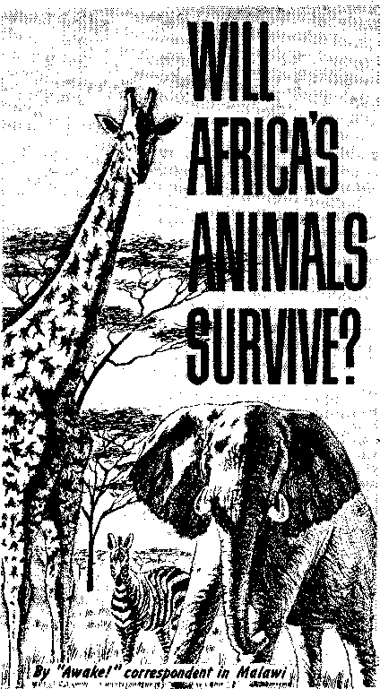
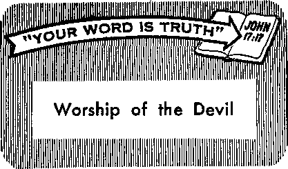

Flight That Is Lifesaving
PAGE EG
What Can You Do About Asthma?
PAGE 9
Prospecting for the Treasures of the Earth
PAGE 13
Stretching Your Gasoline Dollar
PAGE 25
THE REASON FOR THIS MAGAZINE
News sources that are able to keep you dwake to the vital issues of our times must be unfettered by censorship and selfish Interests. '‘Awake!" has no fetters. It recognizes facts., faces facts, is free to publish facts. It is not bound by political ties; it is unhampered by traditional creeds. This magazine keeps itself free, that it may speak freely to you. But it does not abuse its freedom. It maintains integrity to truth.
The viewpoint of "Awake!" is not narrow, but is international. "Awakel" has its own correspondents in scores of nations. Its articles are read in many lands, in many languages, by millions of persons.
In every issue "Awake!” presents vital topics on which you should be informed. It features penetrating articles on foetal conditions and offers sound counsel for meeting the problems of everyday life. Current news from every continent passes in quick review. Attention is focused on activities in the fields of government and commerce about which you should know. Straightforward discussions of religious issues alert you to matters of vital concern. Customs and people in many lands, the marvels of creation, practical sciences and points of human interest are all embraced In its coverage. "Awake!" provides wholesome, instructive reading for every member of the family.
"Awake!" pledges itself to righteous principles, to exposing hidden foes and subtle dangers, to championing freedom for alt, to comforting mourners and strengthening those disheartened by the failures of a delinquent world, reflecting sure hope for the establishment of God's righteous new order in this generation.
Get acquainted with "Awakel" Keep awake by reading "Awake!”
Publibhxd Simultaneously nr TH* United States by tits WATCHTOWER BIBLE AND TRACT SOCIETY OF NEW YORK, INC. 117 Adams Street Brooklyn. N.Y. 11201. U.S.A.
and in England by WATCH TOWER BIBLE AND TRACT SOCIETY
Watch Tower House, The Ridgeway London N.W. 7, England
N. H, Knobs, President Grant Suites, Secretary
Printing this issue: 4,450,000
4< ■ i«w (Alli rail*, 54; Soit* Afrlu.SKt)
Yearly fuhwriptlon rites
Often for semimonthly editions
Amerlei, 0,$., 117 Adams Street, Brooklyn, NX 11201 >1
Austral l<» 11 Beresford Rd., fitrathfleld, N.8.W.
Canada. ISO Bridgeland Toronto 19, Ont
England, Wateh lover House,
New Z«al*hd, 621 Nev North Rd., Auckland S.W. 1
Soith Afrlea, printe Bug 2, P-0. Eltndsfontelc, TtL 70e (Monthly editions tert half the above rataJ
Remittances for fiubscrlDtfons should be sent to the office In your country, Otherd* sand your remittance to Brooklyn.
Motta of expiration is seat at least two tales before autecrlptloti expires.
Now published in 26 languages
Sen I monthly—Afrikaans, Cebuano, Danish, Dutch, EnEltsh, Finnish, French, German, Greek, lioko, Itoi tan, Japanese, Korean, Norwegian, Portuguese, Sbaniah, Swedish, Tagalog. Zulu.
Monthly—Chinese, Clnyanja, Hlllgaynon, Malayalam, Polish, Tamil, Ukrainian.
CHARGES OF ADDRESS should reach is thirty days before yoir raw Inn date. Give us your old and new address (If possible, year old addreu label). Write Watrh Towm, Watck Tow» Hdum, TJ» Ridpfway, London M.W. 7, Enofand.
Entered aa second-class matter at Brooklyn, N.Y. Printed in England
Tbo Bible translation refiiarly ata In “Awake P’ ii the Mew Werld Translation of tbe Holy Serifiros, 1961 edltian. When other translations are rod, this is el early marked.
C ONTENTS
Prospecting for the Treasures
Loose Reasoning of Evolutionists
Will Africa’s Animals Survive?
"Your Word Is Truth”
MANY valuable discoveries and inventions have been made because certain men have asked, Why? The law of gravity, for example, was discovered by Isaac Newton because he asked why an apple fell downward instead of upward.
Today ever so many people are asking, Why? as they note the widespread Immorality, racial prejudice and loss of faith in Christendom. Could it be because people are not getting the right kind of spiritual or religious diet? On the other hand, would it not be logical to assume that, when there is a society of people spoken of as being outstanding as to integrity' keeping, spiritual health, devotion, zeal and effectiveness in Christian works, their spiritual or religious diet has something to do with it?
Thus in the St Petersburg Independent, August 18, 1965, columnist Paul Davis quoted a number of remarks that local businessmen had made regarding Jehovah’s witnesses, who were holding a convention there at the time: "They're the nicest people that we have had the pleasure to do business with, Tm amazed at the behavior of the children,” and so forth. And in Dortmund, Germany, the director of the Westfalenhalle, which the Witnesses used this past summer for their assembly, said: "You are our most appreciated guests." And one of his assistants stated: "There Is no comparison between Jehovah’s witnesses and the [others], whom we had in our rooms a short time ago. The conduct of the [ other 1 guests was shameful and the climax was when they beat up their vicar!’’
In the same vein were the observations that appeared in the Denver Catholic Register j November 12, 1964. Under the heading, "Puts Catholic Effort in Shade, Jehovah's Witnesses Convert Zeal Cited,” the Catholic theologian, J. A. O’Brien, Ph.D., among other things, stated: “Impressive is their record in the U.S.A, . , . In [1963] alone they won 21,462 converts, an average of one convert for every 14 members. Comparing that with ours of one for every 363 Catholics, it means that in the U.S.A., Witnesses are 26 times more active, zealous, devoted and effective missionaries and convert-makers than UJS. Catholics,”
Thus also the popular Roman Catholic author W. J. Whalen, writing In the UJS. Catholic, August 1,1964, holds up the Witnesses as examples because of their “complete commitment" to their religion, “their willingness to suffer ridicule and abuse for
JANUARY 8, 1986
their beliefs,’’ “for they are often not the kind of people who can stand being insulted or having doors slammed in their faces. They have to overcome shyness, sensitivity and inertia.”
Of a similar nature were the comments of a leading Protestant, a director of evangelists for the Covenant Church. Writing in his denomination’s official publication, the Covenant Weekly, August 8, 1958, he records his impressions of the Witnesses while traveling with them for forty-one hours from Yakima, Washington, to Chicago, Illinois, such as:
“Any casual observer of this unusual brainload of people could have made these observations. First of all there was the orderliness of this vast number of people. . . . Second, one could observe their frugality. ... Third, any passenger could have observed that the ‘witnesses’ were living up to the fullest meaning of that word.... If anyone showed any interest at all in their religion, they were prepared to go to work. . . . The ‘witnesses’ have not drawn any lines around their field of responsibility. Here is a [group] that is well integrated. Many Negroes were on the train en route to New York. There were also Indians and Mexicans. . . . They know what they believe. . . . They have an answer for the faith that is in them. . . . They know the use of effective methods.... They have a passion. This is seldom matched by any religious group. They have a loyalty to their group. They are not afraid of sacrifice or persecution. (They have some fulltime ministers who are paid the unbelievable small salary of fourteen dollars a month and their room and board.) They have an urgency about their witnessing. They believe Armageddon is near.”
In spite of all this, however, this church official concluded that the Witnesses were wrong in their beliefs.
Then there was also an article about Jehovah’s witnesses in the November-December 1964 issue of Fact: According to it, what the Witnesses believe is a “carnival of eccentric dogma,” a “theological hodge-podge,” and “nonsensical clap-trap.” Yet after the writer spent three hours going through the headquarters factory of the Witnesses he had to confess, “I didn’t meet a single bored-looking worker. Everybody, devoutly convinced he is doing Jehovah’s work, is happy, enthusiastic and efficient.” And this writer also goes on to tell of the unique, unequivocal and uncompromising stand Jehovah’s witnesses took in the face of Nazi persecution and American war hysteria.
But do the accusations these writers then make against Jehovah’s witnesses’ beliefs make sense? Can persons be so devoted, show such Christian qualities and zeal, have such Bible knowledge, be so effective in their ministry, stand so firm in spite of the bitterest persecution that they are held up as examples to others, and at the same time be wholly mistaken as to their beliefs? If these critics are right as to the teachings of Jehovah’s witnesses, then the Witnesses are being fed on spiritual poison and yet, according to these same critics, the Witnesses are unequaled as to spiritual, religious health. How can this be?
It simply cannot be. The Bible likens spiritual truths, teachings, to food, to milk and meat. (Heb. 5:12-14) In view of the spiritual vigor of the Witnesses, as testified to even by their opposers, it must follow that they are being fed on the very best kind of spiritual food. And of what does that food consist? The Bible, the Word of God, in which they have strong faith. They diligently study it in the light of fulfilled prophecy. And it is this that accounts for the difference.
ON September 8 last year a powerful hurricane named Betsy swept across southern Florida into the Gulf of Mexico, and headed for the Louisiana and Mississippi coast. Its winds, reaching up to 150 miles an hour, posed a serious threat to human life. Would people heed the warnings? Would they flee to safety?
Happily, most did. Some 250,000 persons fled to higher ground; and, although severe damage was sustained to homes and property, comparatively few lives were lost. Unhesitating flight was lifesaving. However, just eight years before, in June of 1957, the situation was quite different. At that time a hurricane passed through Louisiana, and more than 500 persons perished because they failed to flee. Despite the repeated warnings, these felt they could weather the punishing effects of the wind and water. What a foolish gamble'.
Does it seem incredible to you that people would jeopardize their lives, and the lives of their loved ones, by ignoring warnings from reliable sources? Yet many persons do. How much wiser to give heed and to act in harmony x^ith the warnings! This is especially true when an urgent appeal comes from a divine source. Such an appeal is now being sounded through God’s Word the Bible, urging people to flee from an approaching destruction. Heeding it is vital to your preservation.
It is in the last Bible book, called Apocalypse or Revelation, that the appeal to flee is found. However, before voicing it, an angel briefly describes the fall into destruction of the empire from which God-fearing persons must flee in order to be preserved alive. He says:
“She has fallen! Babylon the great has fallen, and she has become a dwelling place of demons and a lurking place of every unclean exhalation and a lurking place of every unclean and hated bird! For because of the passion-arousing wine of her fornication all the nations have fallen victim, and the kings of the earth committed fornication with her, and the traveling merchants of the earth became rich due to the power of her shameless luxury.” —Rev. 18:2, 3.
What a bitter fate! Babylon the Great completely ruined, like a devastated, haunted city that is left without human inhabitant or domesticated animal, where only wild animals reminding one of demons make their dwelling place. From her rotting remains arise unclean exhalations to stench the whole neighborhood. Hateful, unclean birds lurk about her. All her former glory has disappeared.
Because this is the certain fate soon to come ■ upon Babylon the Great for committing fornication with the political rulers of the earth and living in shameless luxury, the plea comes from another heavenly voice: “Get out of her, my people, if you do not want to share with her in her sins, and if you do not want to receive part of her plagues. For her sins have massed together clear up to heaven, and God has called her acts of injustice to mind.” —Rev. 18:4, 5.
The appeal is most urgent: "Get out of her, my people11! Yes, do not delay! Destruction of much greater proportions than even a devastating hurricane is imminent. It is certain to strike, for her sins are great. However, before this lifesaving flight can be made one must know what Babylon the Great represents. Who is she? It is vital that you know.
The announcement of the angel concerning her fall into destruction gives some clues. Did you observe that he said the “kings of the earth” committed fornication with her, and the “merchants of the earth" benefited from her shameless luxury? It is apparent, therefore, that, since Babylon the Great has unclean relations with the political rulers and since she contributes-to the profit making of commercial enterprises, she herself is not the political or the commercial systems.—Rev. 17:1-5; 18: 11, 15-17.
This raises questions as to whether Babylon the Great is a religious empire, since false religion is so closely associated with the politics and commerce of the world. Do the worldly religious organizations commit spiritual fornication with the kings of the earth? Are they richly adorned and do they enjoy shameless luxury?
The Founder of Christianity, Jesus Christ, made clear that for true religion to remain spiritually chaste it must keep separate from the world and its ungodly politics, wars and strife. Of his true followers, he said: “They are no part of the world, just as I am no part of the world.” Therefore, God’s Word forcefully condemns false religionists who cultivate friendship with the world, saying: "Adulteresses, do you not know that the friendship with the world is enmity with God? Whoever, therefore, wants to be a friend of the world is constituting himself an enemy of God.”—John 17:16; Jas, 4:4.
Is it not true that worldly religions are such adulteresses, that, while claiming to serve God, they use their influence to satisfy the desires of the political State? In England, for* instance, the leading clergymen of the Church of England are appointed by the queen, laws made by Parliament control the church’s operation, and the church gives its blessing on occasions of great political importance. In Japan, Shinto was the state religion until the end of World War n, and prominent officials still make visits to Shinto headquarters to report on matters of state. And in other Asiatic lands the rulers frequently consult religious astrologers before acting.
The Roman Catholic Church, in particular, has taken the lead in cultivating adulterous relations with political rulers. She even signed concordats with the Italian dictator Mussolini in 1929 and with Adolf Hitler in 1933, in order to gain concessions and to further her aims. And just this past October the pope of Rome visited the United Nations headquarters in New York City and spoke before its General Assembly, offering his services to that political organization. There can be no question that the world empire of false religion is accurately represented as committing fornication with the kings of the earth.
This religious empire is also materially rich, and the tremendous wealth that she has accumulated over the centuries has btx':shamclessly acquired at the expense of the poor and oppressed. Why, the Roman Catholic Church is said by some sources to be the world’s largest stockholder, and to rank behind only the United
States and the Soviet Union as the world’s largest financial giant. The temples of Oriental lands, too, are lavishly decorated with expensive ornamentations, while those who worship in them often live in abject poverty. The world empire of false religion is clearly richly adorned and enjoys herself in shameless luxury.
An examination of the ancient center of false religion confirms this above-mentioned identification of Babylon the Great. The Bible explains that in about the second century following the Noachian Flood men gathered in the city of Babel or Babylon, and in opposition to Almighty God proceeded to build a tremendous tower, a ziggurat, for religious worship. However, their efforts were thwarted when God confused their languages, causing them to spread according to their various new language groups over the surface of the earth. Wherever these early humans traveled, they carried with them the same erroneous religious ideas, thus building up a world system or empire of false religion. —Gen. 10:8-10; 11:4-9.
The ancient city of Babylon, which became the capital or center of this world empire of false religion, is noted by historians as being outstandingly religious. G. S. Goodspeed, as professor of ancient history in the University of Chicago, said of ancient Babylon: “Religion is the inspiring and regulative element of the community. . . . All life is founded on religion and permeated by its influence.”1
And Colonel J. Gamier, in the introduction of his comprehensive work The Worship of the Dead, confirmed that false religious concepts had a common origin in ancient Babylon. In fact, this is the conclusion of many researchers, as he observes:
“The similar religious rites and beliefs of different nations so widely separated from each other ... could not have been the separate invention of each race. Speaking of all the various systems of Pagan idolatry which he examines, Mr. Faber writes:—‘There is such a minute and regular accordance between them, not only in what is obvious and natural, but also in what is arbitrary and circumstantial, both in fanciful speculation and in artificial observance, that no person who takes the pains of thoroughly investigating the subject can avoid being fully persuaded that they must have all sprung from some common origin.’ [Origin of Pagan Idolatry, Vol. i, p. 59.] This is also confirmed by Scripture, ... It is further confirmed by the researches of modern writers who uniformly regard Babylon and Assyria as the cradle of the ancient Paganism.”
The weight of evidence gathered from the writings of eminent historians caused Gamier to write further in his introduction: “We shall see, in the course of our inquiry that the religions of other more remote nations, such as the Hindus, the nations of Eastern Asia, the ancient Germans, Celts, and the Mexicans and Peruvians of America, are intimately related to the religion of Babylon, . . , Babylon having been the centre from which the ancient Paganism originated.”
Included among ancient Babylon’s many false religious concepts were beliefs in consciousness after death, a clergy-laity distinction, a “Mother of God” teaching, and the trinity doctrine. Regarding her trinity belief Morris Jastrow, Jr., as professor of Semitic languages in the University of Pennsylvania, explained:
“Bel, as the god of earth, was associated with Anu, as the god of heaven, and Ea, as the god of the deep, to form a triad [trinity] that embraced the entire universe. When, therefore, Anu, Bel, and Ea were invoked, it was equivalent to naming all the powers that influenced the fate of man.”
Regarding the early origin of this teaching Jastrow said:
“It is difficult to say, therefore, how soon the concept of a triad standing at the head of the pantheon arose. We have found it in Gudea’s days, and it must, therefore, have existed In the days of Hammurabi-”2
How obvious that Babylon the Great is a worldwide religious empire! In the Bible no priests are mentioned in connection with Babylon the Great, because she herself stands for the world empire of false religion with its priests, clergymen, nuns, monks, astrologers, spiritists and other religious figures.
The common roots of worldly religion, which reach back to ancient Babylon, make the name Babylon the Great most appropriate. Even Christendom’s many worldly religions are included in this vast religious empire, for they have adopted many nonChristian teachings and practices that find their origin in Babylon; the foremost Babylonish teaching being the trinity doctrine, which they have made her central teaching.
Babylon the Great today is certain to undergo the same fate as ancient Babylon. It was in 539 B.C.E. that Babylon of old experienced a significant fall at the hands of the armies of Cyrus the Persian. The captive Jews were released and allowed to return to their homeland to take up true worship. Explains one reference work: “After the overthrow of Babylonia by the Persians, Cyrus ^ave the Jews permission to return to their native land (537 B.C.), and more than forty thousand are said to have availed themselves of the privilege.”!
These many captives were, in fact, responding to the Bible appeal recorded over seventy years before: “Flee out of the midst of Babylon, ... Get out of the midst of her, O my people.” Babylon’s fall made this flight possible. However, it was not until many years later that Babylon fell into utter desolation, coming to the state God’s Word described: “Babylon must become piles of stones, the lair of jackals, an object of astonishment and something to whistle at, without an inhabitant.” So complete was her desolation that only in recent times did excavators locate the ruins of that once greatpity!—Jer. 51:6, 45, 37; ban. 4:30.
Just as ancient Babylon experienced a significant fall in 539 B.C.E., allowing those held captive to flee, so Babylon the Great today has suffered a fall that has broken her hold upon her religious: captives. Hundreds of thousands have already thrown off the blinding superstitions and false teachings of Babylon the Great, and have fled that vast empire of false religion. It is vital that you, too, flee!
To make this flight you must first study God’s Word and learn the truth about God and his purposes. It is this truth that frees one from false religious concepts. (John 8:32) It will make clear to you the Babylonish foundations of worldly religions, and will reveal bow different true Christianity is. If you want to be one of Jehovah’s worshipers, you must, then, heed the Bible’s warning to break off connections with Babylon the Great, be it the Protestant, Catholic, Jewish, Hindu, Buddhist or any other part of it. Then to gain Jehovah’s favor you must join in rendering Him true worship with his Witnesses.
This flight from Babylon the Great is now urgent. God’s judgment against her will soon be executed. So heed the heavenly warning. Get out of her! Unhesitating flight will save your life.
What can you
AS ADULTS we inhale and exhale air about eighteen times every minute. We take this for granted, breathing while eating, working, sleeping or whatever else we might be doing. We take it for granted, that is, until something goes wrong, as when we have a bad head cold or especially an attack of asthma.
If you suffer from asthmatic attacks you know it is no laughing matter. Usually after several hours of sleep you suddenly awake because of your great difficulty in breathing. You cough and wheeze. Seeking relief, you quickly get out of bed and try to find some comfortable position on a chair or in front of an open window. It is as if you were fighting for your life; your eyes may bulge, your face becomes pale and a cold clammy perspiration covers your body.
Gradually the attack lessens; the coughing brings up considerable heavy mucus, after which you breathe a sigh of relief. Your eyes and face become normal again, and now you go to bed, hoping to get a little more sleep.
The name asthma means “panting" or "gasping,” and that certainly describes it. It has plagued humankind for millenniums and is no respecter of persons. Infants and the aged, rich and poor, educated and illiterate, all races and nationalities are likely to suffer from it—most severely from autumn through spring. It is more prevalent in childhood, however, and boys appear to be twice as susceptible to it as are girls. Estimates vary as to the number of those suffering from it in the United States —some giving a figure as high as eight million.
do , .
about
In an asthmatic attack three factors are present: a swelling of the lungs’ small tubes, a clogging of them with mucus and a spasmodic contraction of them by means of the nerves. But as to the underlying causes, there are ever so many conflicting ideas, even as there are many types of treatment recommended.
There is, however, quite general agreement that a predisposition to asthma is inherited. Asthmatic patients usually have at least one close relative who is also afflicted; if not by asthma, at least by hay fever, the symptoms of which are similar though much milder. Asthma victims, for the most part, are high-strung,, sensitive persons with keen or vivid imaginations, whose mind and emotions appear readily to affect their bodies. While nothing can be done about inheriting a predisposition to asthma, there are certain things that may bring on attacks and that you may be able to avoid.
Among the various things that may bring on an attack of asthma are certain foods, such a cereals, milk, eggs and chocolate. Then again, the cause may be a drug, aspiriq being especially suspect. Among the most common precipitators of asthma are things that are inhaled, such as pollen, insect powders, certain kinds of face powder, airborne molds and dust. Any hairy animal may bring on an attack; but not such things as fur coats, as these usually have been treated with chemicals and so are free from allergens. Then again, bacteria is blamed by not a few as the cause in certain cases. Sudden changes of temperature, as well as the cold, damp night air, may bring on an attack. In particular are attacks associated in some persons with nervous tension, frustrations and emotional upsets, especially on the part of children.
Faulty diet is also recognized as a cause, aside from food allergies. Malnutrition or constipation may cause it. Overeating and eating rich foods before retiring may bring on an attack during the night. Then again, extreme physical exertion for one who is not used to it may bring on asthmatic attacks for the first time and result in one’s being afflicted long after.
There appears to be a trend among certain medical men more and more to consider asthma as a psychosomatic affliction, one that is caused by mental or emotional disturbances and strains, especially in children. Doubtless there is some reason for this viewpoint, although it could easily be overdone. For exarpple, an asthmatic may suffer when he sees artificial flowers or weeds, which do not contain offending pollens at all. But that does not prove that such offending pollens in the first place did not cause his condition, but merely that his nervous system has been conditioned by his affliction. As one physician well expressed it; “Asthma is not caused by the patient’s, psychosomatic state; but the asthma renders him” more susceptible to psychosomatic factors.
Peculiarly, while mental and emotional strains and upsets may well bring on asthmatic attacks, these very things at times bring relief. Thus an asthmatic wife was free from attacks all the time her husband was seriously ill. A mother’s asthmatic attack suddenly ended when she saw her child in danger. Further, it is well known that when an asthmatic suffers a broken bone or has an operation he usually is free from attacks for about a month, until the injury is healed. How can these vagaries of asthma be accounted for?
By the theory that the three basic conditions involved in an asthmatic attack, the swelling of the small tubes in the lungs, their filling with mucus and their nervous spasms, are all brought about by an insufficiency of epinephrine or adrenaline. Under certain strains or pressures the adrenal glands secrete more of their hormone into the blood, thus counteracting the tendency to asthmatic attacks. In keeping with this is the popular medical practice of using epinephrine in inhalators in treating asthmatic attacks.
If you suffer from asthma, what can you do about it? Most likely you will want to consult a physician, but what kind? One that puts his whole faith in medication and endeavors to control the asthma by drops, sprays, hypodermic shots, pills, capsules, rectal suppositories, “wonder drugs,” gamma globulin, and so forth?
Perhaps not, for there is danger ot overmedication in treating asthma. Thus an article in Michigan Medicine, July 1965, states that “in no other disease is the physician apt to contribute toward aggravating the situation as much as in asthma. . . . Unnecessary medication should be strictly avoided.” And regarding the treatment of long and severe, chronic, asthma, it states, “Withdrawal of former medication as much as possible is indicated.”
In the same vein a physician writing in the Journal of the American Medical Association, March 14, 1959, stated: “The uses of antibiotics and/or sulfanimides during attacks or daily for months and even years, and the recent injections of gamma globulin for wrongly assumed infectious asthma are unnecessary, costly and are a potential danger,"
According to such physicians as Japanese Dr. K. Nakayama and Boston’s Dr. R. H, Overholt, a minor operation has provided relief when all other therapy failed. Their operation consists of removing one or both of the tiny carotid bodies, organs the size of a rice grain on each side of the neck. They report that from 75 to 80 percent of those operated on get full relief or at least partial relief by this operation.
Among other approaches is treatment with “gold salts.” British Dr. Banszky, in his book The Modern Treatment of Asthma (1959), claims that “gold salts,” used in a certain way, “can be a valuable mobilizer of Nature’s reserve forces and a powerful help in the fight against asthma.’’ His treatment involves a weekly injection for nine weeks but is not indicated for asthma caused by infection.
The use of vitamins is an approach often used in conjunction with other therapies. It seems that, in particular, vitamin C has much to recommend it. Vitamins A and D are also highly recommended by some, but care must be used in taking them, as harm can result to the body from taking too much of these.
Then -there is the approach that puts practically all the onus on food allergy. According to one of its leading advocates, Dr. A. H. Rowe, the best way to go about this is to start with a diet without cereals, as these usually are the greatest offenders. If no relief is obtained, elimination of other things may be tried, such as eggs, milk or chocolate. He tells of persons who had been given injections for years to control their asthmatic attacks and who had them brought under control in one to four weeks simply by avoiding foods to which they were allergic. Sometimes it may be a number of foods; then again, it may be only one food that is to blame. This approach apears to be in line with the Pulse Test developed by Dr. A. F. Coca, who has cured many cases involving a variety of illnesses simply by finding which foods his patients were allergic to, as indicated by a rise in their pulse rate after eating them.
Not to be overlooked is the change of climate. Many have found relief by going to sections of the country not plagued with cold and damp weather. Generally, however, the physician will recommend this only as a case of last resort; because of both the uncertainty of the result and the cost involved in making such a change.
The question of the constitutional approach might be said to be the bone of contention between the orthodox medical profession, which considers diseases as separate entities, and the types of treatment that consider all disease constitutional. The fact is, however, that the medical profession does give lip service to this constitutional approach by recognizing what it terms “physical medicine.” It is defined as “the treatment of disease by physical (nonmedical) means, such as heat, massage, hydrotherapy, exercise, rest, occupational therapy,” and so forth.
This is similar to the position taken by chiropractic. It considers asthma to be systemic, that is, involving the whole body and directly connected with the nervous system. It claims that, since this is so and chiropractic treatments are primarily given for the purpose of improving the flow of nerve force, nothing can be as beneficial for the asthmatic as chiropractic treatments. Interestingly, a very successful chiropractic practitioner in the Middle West of the United States was one who was stricken so severely with asthma while studying in a medical school that he had to quit and, in the end, found relief only by chiropractic treatment, which caused him to choose the career of chiropractor instead of medical doctor.
According to the constitutional approach, the asthmatic needs his whole body to be built up, especially the lungs. Thus in Annals of Allergy, May 1965, there is a report on the treatment of twenty-five asthmatic children who were given a closely controlled physical-conditioning program. As a result, they greatly improved in breathing, in their circulatory system and in their emotional state. During this time none of them required hospitalization, although during the previous year one-half of them did.
Writing in favor of constitutional therapy is also Dr. K, Schultz, in the New York State Journal of Medicine, March 1, 1955. He puts the emphasis on exercises, breathing and mental attitude. Among the simple exercises he recommends is lifting the heels as high as possible while standing, once a second, fifty or sixty times in a row; also drawing in and pushing forward the abdomen a like number of times. He recommends light exercises to begin with, such as walking half a mile, and then, gradually, medium and heavy exercises. These exercises benefit because they stimulate the adrenals on the kidneys in the small of the back. He reports that some 80 percent of his patients were helped, half of them so much that they were able to discard all medicines. He also stresses breathing exercises with the emphasis on exhaling, as well as the need to really want to be healthy and a willingness to cooperate with one’s physician. He holds that any addiction works against cure and that asthma is a disease of a civilization that has made man less active and so weakened his adrenal glands.
COMING IN THE NEXT ISSUE • Christianity's Unique Requirements. • Tire Care May Save Your Life.
• Worldwide Lawlessness of Youths—Why7 • Fertile Soil—a Miracle of Creation.
That breathing exercises can help in controlling asthma was underscored by the research made by Dr. A. Bouhuys of the
Emory University School of Medicine, Atlanta, Georgia. He found that those who played wind instruments were far less likely to suffer from asthma, as it required “a fine regulation of the exhaled air flow rate and of the pressure generated by the lungs and chest”—Science News Letter, June 13, 1964.
In support of the constitutional approach to asthma must be mentioned what was learned about it in Britain during World War II. Ever so many men who had sedentary occupations and who suffered from asthma were cured once they got into the army, where physical exercise improved their health. But when they returned to their civilian desk jobs their asthma returned also. As constitutional therapy, exercises in relaxation must also be mentioned (since asthmatics are prone to be tense) and good posture.
No question about it, asthma is not a simple affliction, or there would hot be so many different opinions as to the cause and so many different remedies recommended by the medical profession, as well as by therapists outside the ranks of medical orthodoxy. Since they all seem to be able to point to only partial success, it would seem that the wise thing to do is to try various remedies with an open mind, with a preference for those involving the least medication.
AS A child, perhaps you were fascinated by stories about a treasure hunt. One of the stories told may have been about a chest filled with gold and silver that was known to be buried in some remote place. With only a faded map and few clues to guide him, the adventurer slowly tracked down the position and finally dug down into the earth to claim the treasure.
Today a treasure hunt is on in a big way. Around the world mining groups and governments are spending millions of dollars annually on vast exploration programs, prospecting for earth’s valuable metals and minerals. These are the riches and raw materials under the ground that form the basis of our twentieth-century industrialized civilization. The techniques of modern science are patiently applied, as geologists search out promising places and drilling engineers probe down for the prize.
Ore Bodies
About ninety chemical elements occur naturally on the earth. Chemical analysis of large numbers of rocks has shown that eight of these elements make up 99 percent of the surface crust of our planet..3 The remaining ones together make up less than one percent of the earth’s surface rocks. However, during the early formation and development of the earth the Creator saw to it that local concentrations of these rarer elements occurred, to produce bodies of ore.
From these mineral deposits are extracted the valuable metals and nonmetals, without which modern in-
PROSPECTING
For The
‘ i» TCetya
dustries could not exist. As an illustration, the average amount of lead in the rocks of the earth is about one part in one hundred thousand, and it is practically impossible to extract and purify lead from such rocks. However, there are places in the earth’s crust where lead minerals are concentrated in ore bodies containing more of the metal. For example, extremely rich lodes have been discovered, such as those deposits containing galena, a mineral that is about 86 percent lead and which is the main source of lead throughout the world.
In some cases such deposits of valuable ore are exposed on the surface of the ground and can be easily discovered. However, in general the rock formations of the earth are covered by a thick mantle of soil, sediment and vegetation,
which shows no visible signs of the mineral wealth that may lie buried below.
Today the science of geochemistry draws clues from the sand to seek out these hidden treasure troves. Soils have a composition similar to that of the rocks from which they were largely formed and consist mainly of the same eight elements, containing only very small amounts of most of the others. Chemical analysis shows that the amount of such trace elements in soil samples taken, say, every hundred feet along a sampling line, varies slightly from the average or “background” value for that area. However, in the vicinity of an underground ore body the concentration of certain trace elements in the overlying soil may rise well above the background level. When the geologist has reason to believe that he is near a hidden mineral deposit, he may conduct a soil survey over the area, to pinpoint the exact position.
As the first step in exploring a large unknown area, a "drainage reconnaissance survey” may be conducted. Rainwater draining into streams contains minute amounts of elements removed from the rocks and soils from which the water has drained. So the sediments deposited in the rivers and streams reflect the composition of the rocks and soils in the area. Analysis of stream sediments may, therefore, give a clue to likely areas of mineralization, which areas are then explored in more detail.
At present the Uganda government is carrying out a reconnaissance survey in Karamoja district, which is a large sparsely populated area in northeastern Uganda. In the dry season geologists collect samples of sediments from dry riverbeds, and these are sent to the laboratories of the Geological Survey Department in Entebbe for analysis. The results are recorded on maps showing the rivers and streams.
In areas of human habitation the very low levels of trace elements normally found in the sand are completely changed. For example, the average concentration of tin in stream sediments from a certain area may be less than one part per million, or a sediment containing, say, ten parts per million, may be considered significant, as indicating an unusual geological environment. However, a tin can lying on the bank of the river may easily result in ten parts per million of tin being reported in a streanfsediment sample taken nearby. Similarly with soil surveys, when the chemical results are plotted on a map of the district, inhabited areas, railways, roads and footpaths show up as “geochemical highs,” due to the rust and refuse from all the machines and metallic implements employed by man.
The samples of soil or sediment are analyzed by very sensitive chemical tests that can detect minute amounts of elements such as copper, lead, zinc, cobalt and nickel. The tests are cheap and simple to perform. Great accuracy is not required in the analytical work, as the geochemist is looking for large variations in traceelement concentration. A valuable tool applied in this work is the optical spectrograph. By means of this instrument a soil sample can be analyzed simultaneously for twenty or more elements down to very low concentrations. Important requirements for any analytical method to be useful in geochemical prospecting are speed and low cost per sample, as very many samples must be analyzed. Detailed geochemical surveys normally involve analysis of about one thousand samples per square mile.
Plants may provide important clues in the geological treasure hunt. The nourishment for vegetation comes from the soil, and so the amount of certain trace metals in plants depends to some extent on the concentration of these metals in the surrounding soil. Therefore, it is sometimes possible ,to follow the trace element composition of the underlying soil by removing samples of vegetation and analyzing the roots, branches or leaves. This technique is especially useful in areas of thick forest or swamps, where sampling of the soil would be difficult. On the Colorado plateau prospecting for uranium has been carried out by analyzing deep-rooted plants, such as the juniper and sage, for the content of uranium and vanadium.
Related to the above-mentioned method is the geobotanical method of prospecting, which has to do with locating minerals by their effect on plant growth. For example, a gardener knows that a deficiency of iron in the soil will cause yellowing of green leaves. In the early days, successful prospecting was done by searching for bare places in the bush caused by excessive amounts of copper in the soil, which poisoned the growth of vegetation. On the other hand, the fact that a certain shrub thrives in iron-rich soil has been used in prospecting for iron deposits in Venezuela.
In certain circumstances individual plant types may be indicators of specific metals in the soil. For example, on the copperbelt of Zambia there is a small plant known as the “copper flower,” which grows only in soils having a high copper content Geologists have used this flower to trace out copper-rich areas. The calamine violet grows only in soils with high zinc content in Silesia, Poland, and this species has been used for prospecting zinc deposits.
There are many other cases where botanical indicators have been used in prospecting, but their use requires considerable local knowledge and experience. Methods involving vegetation are not generally useful, owing to the fact that local climate, sunlight, soil drainage and other factors, in addition to soil composition, determine plant growth.
The advantage of geophysics is that many physical^measurements can be made on the spot without having to remove a sample for chemical analysis. Further, the measurements can be made at a distance. Thus, the electrical, magnetic and certain other properties of underlying rocks can often be measured at the surface of the ground. With great improvements in instrumentation it has become possible to make such measurements at greater distances above the rocks in an airplane, and today large areas are being prospected from the air.
Rocks often show variations in the amount'of magnetic material in them, and such changes can be detected by measurements of the variation of the earth’s magnetic field by an airborne magnetometer. Changes in rock types are also reflected sometimes by changes in their radioactive content. Thus measurements of weak radioactivity by a scintillation counter carried in an airplane can be used to indicate the type of rocks below.
Further, some minerals have the property of conducting electricity, and under suitable conditions such conductors can be detected from the air by electromagnetic equipment.
Copper is at present mined from the Ruwenzori range (Mountains of the Moon) on the Uganda-Congo border. The copper occurs as chalcopyrite, which is a conducting mineral containing copper, iron and sulphur. Recently an airborne geophysical survey was conducted in western Uganda in the hope of locating other deposits of this copper mineral. In this procedure, two airplanes fly-at constant speed,
one about a thousand feet behind the other. Equipment on the second aircraft transmits electromagnetic signals that are reflected from the earth and detected by sensitive instruments contained in a “bird” that is towed behind the front airplane. The electromagnetic waves bounced off the earth are modified, depending on the presence or absence of conducting minerals in the rocks below, and the signals detected by the “bird” are automatically recorded. Interpretation of the results is a very complex problem.
Geological indications are not the only factors to be considered when deciding whether to survey an area for minerals or not. In most countries considerations of property ownership are important. Further, a company would also base its decision as to whether to explore for minerals upon political considerations. A commercial company would not spend large amounts of money to locate and develop mineral deposits in another country if there were fears that political changes might bring in a government that would nationalize foreign industries.
The day of the private prospector is not yet completely past. In lesser developed countries such as Uganda enterprising individuals still roam around the “bush,” paying natives to search for unusual rocks or stones. However, in the more developed countries of the world the exposed deposits of ore have, for the most part, already been found. The big discoveries of the future will probably be those hidden underground deposits that can be located only by the methods of modem science. Discovery and development of such deep deposits is an expensive process,' which can usually be carried out only by governments and large private groups. Some of the biggest mineral deposits may yet be found beneath the oceans, and men may discover some practical method of mining them.
The United States Bureau of Mines has started an oceanographic station in California in prder to investigate undersea minerals and to develop practical methods of extracting them from the ocean. Exploration is carried out with drills, underwater cameras and other techniques. The Russians, who have prospected vast areas of central Asia by geochemical methods, are already exploring the floor of the Pacific Ocean for manganese.
The future will no doubt see many improved techniques in the art of scientific . prospecting and an increase in the extent of mineral exploration, not only in inhabited lands, but also in the uncharted deserts, in the frozen land masses of the north and south, and even beneath the oceans.
It is evident that the Creator has provided our earthly home with a bounty of all kinds of valuable raw materials, and as man has patiently prospected the ground beneath his feet, the earth has yielded up its hidden treasures.
LOOSE REASONING OF EVOLUTIONISTS
• In his book The Dogma of Evolution, Professor Louis More made this interesting observation about the loose reasoning of evolutionists: "The most discouraging feature of the whole problem of biological evolution, to one who has been trained in the exact phraseology and rigorous logic of the physical and mathematical sciences, is the loose language and the still looser reasoning of the evolutionists and of the biologists. Up to a certain point, their language and methods are those of science and then comes a relapse into the methods of the untrained thinker.”
THE plains are parched, the grass turned brown by the tropical sun. Smoke rising from numerous bush fires mingles with the shimmering heat haze. The wild animals are thirsty. As the sun begins to drop in the west and the heat of the day passes, they come down to the river to drink. From our camp on the high river bank we can watch this fascinating parade of African animals at home in their vast unfenced zoo.
The river is wide at this point, but each day the water drops a little lower. As the smaller streams and water holes in the district dry up, the animals congregate in ever-increasing numbers to the river. Sandbanks are exposed by the receding waters, and here many crocodiles lie basking in the sun, motionless. Just below us, almost submerged in the water, are hippos with only their eyes, ears and nostrils visible. Occasionally one opens his cavernous mouth in a wide yawn.
Turn your eyes now to the opposite bank. It looked almost as though that large shadow moved. Look again. It is now recognizable as an old bull elephant. As he moves slowly and silently down the bank to the water’s edge, several other elephants follow him from among the trees. They pause to gather some foliage, tearing down branches with their trunks. They also eat grass and roots, which they dig up with their tusks. They require large quantities of food, about a quarter of a ton of green fodder daily, and now, during the long drought, fodder is getting scarce.
Looking upriver from our vantage point, we behold a scene of great peace and beauty: Large waterbuck with splendid horns, kudu and striped zebra together with their companions, the wildebeeste. The heads of the long-necked giraffe appear above the flat-topped acacia trees. The timid impala raise their heads in alarm as a huge rhinoceros joins them at the river. The rhino has enjoyed a long siesta, but now, in the cool of the evening, he has come to wallow in the mud. Beyond these a mighty herd of massive-horned buffalo blackens the river bank.
Suddenly a shimmering crimson cloud wings before our enchanted gaze—a flock of carmine bee eaters speeding to their nests in the river bank. Africa has a wealth of bird life. There, poised on a branch overlooking the water, is a colorful kingfisher. Beautiful white egrets are feeding unEtfraid among the crocodiles on the sandbanks. In the trees are colonies of weaverbirds, while, high above us, the majestic fish eagle is calling. This glimpse of Africa’s unparalleled animal life fills us with wonder and delight.
At one time Africa teemed with wildlife from the lower Nile to the Cape; today, however, scenes like the one before us are becoming rare, for many of the animals of Africa appear to be traveling the road to extinction. Some have already joined the dodo, such as the quagga, a zebralike animal that was of a brown color with black-and-cream stripes on the head, neck and shoulders only. Others are balanced precariously on the verge of annihilation.
What is the cause of this? Althoilgh diseases, such as rinderpest, kill many animals, they do not often lead to the extinction of entire species. As for the quagga, it was exterminated by white men mostly for food for slaves and laborers. Man, who slaughters vast numbers of animals, is the main culprit.
Africans, of course, have been killing game for centuries, and many tribes are traditional hunters. In the past, game was plentiful, but the supply is not inexhaustible. For example, in 1934 there were estimated to be 250,000 of the deerlike animals called lechwes in the Kafue fiats of Zambia. Today, as a result of organized tribal hunts, there may be only 15,000 left. As meat gets scarcer in Africa, the wholesale slaughter of wild animals only increases the threat of starvation. If the rate of destruction, continues to be higher than the rate at which the species can replenish its numbers, it may die out. Also, if the total number of a species drops below a certain level, that species, unless it has special protection, is almost sure to become extinct.
Contributing to the slaughter of wild animals has been the influx, over the years, of explorers and hunters. Early explorers in Malawi slaughtered great numbers of hippos, which were a menace to their river steamers. And many have been the hunters who have come to Africa on safari, to kill animals for sport, for thrills and for trophies.
That man has miserably abused his dominion over the beasts was stressed by one scientist who said: “Since man’s appearance on the scene in recent times, with one or two exceptions, all cases of wildlife extinction can be lodged to his own hands.” The magnitude of the problem was emphasized by the Duke of Edinburgh, who stated: “Today there are 250 species of animals and birds in danger of extermination by the sheer callousness of mankind.” Indeed, it has been said that man is responsible tor the disappearance or near disappearance of 450 animal species. Once man has exterminated a species he is, of course, incapable of re-creating it. One author expressed it this way: “We are capable of building skyscrapers or destroying whole continents with atomic bombs; but to bring a dead worm back to life is beyond us.”
Africa is awakening from her centuries-old sleep to a new way of life. Revolutionary changes shake the continent. The human population explosion results in more and more pastureland coming under cultivation, thus crowding out the wild animals. Elephants and agriculture do not easily coexist. Domestic animals overgraze and destroy large areas of grassland. Forests are cut down and burned and the water supply diminished.
Thus animals of the mountains, forests, savannahs, deserts, rivers and lakes of Africa are all endangered. One survey showed that no less than half the original wildlife areas of Africa are now eliminated, and more than three-quarters of the animals in the remaining areas have been killed. In the Republic of South Africa the destruction of big game outside reserves and private game lands is virtually complete.
Changing conditions and the increase in the human population, however, are not the only reasons for the mass destruction of the African fauna. One primary reason is the killing of animals for profit, which is often done illegally. Elephants, the most sought after of Africa’s animals, have long been slaughtered for their ivory. In the last century millions of tusks were carried from the interior to the coast on the heads of slaves. Today, poaching elephant ivory is still big business. During a campaign against poachers in Tsavo Royal National Park, Kenya, 1,280 elephant carcasses were found. Only a few thousand elephants remain in the area. Poachers often kill elephant cows, and leave the calves to die of starvation. ,
The Serengeti National Park in Tanzania harbors the finest and one of the last surviving great concentrations of African game. Yet in this area alone about 150,000 animals are poached annually.
Zambia loses 200,000 wild animals a year through poaching. An operation in which aircraft took part recently resulted in the arrest of fourteen poachers armed with ancient muzzle-loaders and modern rifles. Their tractor-trailer was loaded with carcasses and skins.
The scimitar-homed oryx was formerly widespread over the arid areas of North Africa. In recent years they have been slaughtered, not only by armed Arab horsemen, but also by oil surveyors and troops hunting from vehicles and using machine guns. Today, only an estimated 10,000 remain.
The rhino, our second-largest land animal, faces extinction. The world population of the white or square-lipped rhino is down to a mere 4,000. Many rhinos are poached by Africans for their “horn,” which is exported to the East, where it is ground to a powder and sold at a great price as an aphrodisiac. Poisoned arrows are banned in Kenya, but reports show that the Wakamba use them in hunting rhino. Many more are speared by tribesmen.
Africa’s animals are killed, not only with guns, spears and bows, but also with snares, pit traps, ring fires and dogs. Over 1,500 snares were removed by rangers and game guards in the Mzuzi Game Reserve, Zululand, in twelve months. The usual victims are antelopes, but rhinos are also killed in this way. When the Bengengai Game Reserve was proclaimed in the Sudan, 2,000 large game pits dug by the Zan-de tribe were filled in.
Many animals are hunted for meat, others for tusks, horns, skins or tails. The leopard is poached for its beautiful spotted pelt and is almost extinct in many parts of Africa. They are frequently killed by poison so that their pelts are undamaged. They were once common in Malawi but are now comparatively rare.
The fascinating giraffe, the world’s tallest animal, is slaughtered for the tuft of hair on the tail, which is used as a fly whisk. Crocodiles are hunted at night with the use of lights. Their leather is used in the manufacture of shoes and handbags. Many beautiful birds, including the heron and the bird of paradise, are destroyed to obtain their feathers. The Angoni of Malawi kill the paradise flycatcher for its plumage.
Hunting is thus done for meat or for some part of the animal that is of economic value, but it is also done just for sport. The idea of killing for sport or for the excitement of it is not new but dates back to the days of that notorious “mighty hunter,” Nimrod, founder of ancient Babylon. (Gen. 10:8-10) Seldom is thought given to replenishing the animal resources that are taken. But it is encouraging to see that hunting with a camera, rather than with a gun, is becoming more popular.
Today, conservationists are trying to preserve Africa's threatened animals. For example, by damming the mighty Zambezi River, man produced the 2,500-square-mile Kariba Lake. In 'Operation Noaii’ thousands of animals and birds marooned on hilltops and endangered by the rising waters were captured in nets and ferried to safety. Tranquilizers were sometimes used to facilitate handling. Other animals were driven into the water and then captured or made to swim to the mainland.
Wild animals are valuable to Africa, not only as a tourist attraction, but also as a source of meat. The eland, the largest antelope, which has been exterminated over a large part of its former range, has been used in recent experiments in wild animal ranching. Game ranching is gaining popularity in Zambia and Rhodesia.
Education to stimulate appreciation of wildlife among the people is an essential step in the preservation of our wildlife heritage. Many men, realizing that wildlife is a valuable natural resource, both from a practical and from an aesthetic viewpoint, have stressed the need for wildlife conservation. One African leader stated, “The survival of our wildlife is a matter of grave concern to all of us in Africa.”
Game reserves play an important part in protecting wildlife. Game rangers constantly patrol the area to reduce poaching. The animals’ natural habitat is preserved and improved where necessary. Water is provided by boreholes and dams, and predators are kept in check. In the reserves of southern Malawi, elephant, buffalo and antelope, including the rare and beautiful nyala, are protected. The greatest concentration of game in Malawi is probably in the center of the country, where the Ka-sungu reserve is being developed. In the north is the Nyika plateau, almost half a million acres of short rolling grassland at an altitude of more than 7,000 feet. Large herds of antelope spend the spring and summer months here. This is the home of the lion and the leopard. Here the cheetah races, fast as the wind, after its prey.
The sun is fiery-red as it touches the horizon. In a few moments it disappears, night falls, all colors are extinguished. The brilliant stars appear, and the nocturnal animals emerge from their daytime hiding places. The silence is shattered by the noises of an African night—the croaking of frogs and the roar of a lion.
Our hearts and minds are filled with wonder at the beauty and variety of wildlife, and we are happy to know that one day, in God’s new order of righteousness, before man has destroyed all these marvels of creation, man will exercise proper dominion over Africa’s animals.
Because the giraffe’s neck is so long, the animal needs an extremely high blood pressure so that blood may reach the towering head. But what happens when the giraffe lowers its head seven feet below the heart’s level to take a drink? What prevents brain hemorrhage? Scientists, keenly interested in the giraffe’s heart and blood system, have found that this living skyscraper is marvelously designed to cope with the problem. The Creator equipped it with an automatic valve to control the blood supply, so that there is neither brain hemorrhage upon lowering the head nor sudden draining of blood when the head is quickly raised.
as far back as the creation of man,”4 The dividing of time into months and years likewise reaches back to the time of the first man. And although Jehovah God did not directly establish these divisions, he did set the sun and moon in their orbits in such a way that they would be a logical basis for making them. (Gen. 1:14) It is therefore evident that Noah, who was born only a hundred and twenty-six years after the death of the first man Adam, and who had a record of the ages of the early heads of the human family, counted thirty
IN RECENT years such tremendous changes have been made that if an early man returned to our present civilization he would think himself in a fantasyland. Airplanes, rockets, missiles and many other formerly unbelievable accomplishments of modem science would amaze him. But he would find other things quite familiar. For instance, the calendar that hangs on the wall of almost every home and office. How similar he would find its system of dividing time into seven-day weeks and thirtyday months to the way that the first men on the earth measured time!
This similarity exists because the Creator himself established the basis for man’s system of measuring time. When Jehovah God prepared the earth for human habitation he separated the time that he had allotted for the job into days or periods, six for doing the various features of the work and the seventh for resting. Since early men such as Noah divided time into seven-day periods, it is quite evident that they copied God’s pattern. (Gen. 8:10, 12) In fact, one authority observed that the antiquity of the seven-day week "is so great, its observance so widespread, and it occupies so important a place in sacred things, that it has been very generally thrown days to a month and twelve months to a year.—Gen. 5:l-6:9.
This conclusion is reached because at Genesis 7:11, 24 and 8:3, 4 one hundred and fifty days are shown to be equal to five months. And in this same narrative of the Flood the second, seventh and tenth months of the year of the Flood are referred to, after which the passage of fifty-four days is described, and, then, a short time later (evidently after six more days), the first day of the first month of the following year is mentioned.—Gen, 7:11; 8: 4-6, 10-13.
Therefore, it is reasonable to assume that the year consisted of twelve months of thirty days each, amounting to a total of 360 days. In support of this M’Clintock and Strong’s Cyclopaedia, Vol. 2, page 294, says: “We have also the testimony of ancient writers that such a year [of 360 days] was known to some nations, so that it is probable that the year of Noah was of this length.” And Smith’s Bible Dictionary, Vol. 4, page 3579, suggests that the lunar year of 354 days and the vague year of 365 days were derived from ‘this primitive year used by the Noachians before their dispersion.’
In very early times men counted the beginning of the year froip the fall, the first month starting about the middle of our present month of September. This gives rise to the conclusion that man was created in the fall of the year, since he would naturally begin counting time from his creation onward.
Thus, when the Scriptures say that the Flood began “in the second month, on the seventeenth day of the month,” that date would correspond to the first part of our present month of November. Thi^ is arrived at by counting one month and seventeen days forward from the middle of September. By the same calculation, “the seventh month, on the seventeenth day of the month,’* the date that the ark came to rest on the mountain range of Ararat, would correspond to the early part of our present month of April.—Gen. 7:11; 8:4.
A strong indication that the counting of time from the fall continued among Noah’s descendants after the flood is revealed by the fact that just prior to the Israelites’ exodus from Egypt in 1513 B.C.E. Jehovah instituted a change, saying: “This month [Abib] will be the start of the months for you. It will be the first of the months of the year for you.”—Ex. 12:2; 13:4.
The month Abib, its name, having the sense of “an ear of grain, a green ear,” began near the vernal equinox, just six months removed from the previous start of the year in the fall. As its name indicates, Abib fell at the time that the grain crops began to ripen. This is seen by the fact that the plague of hail, which occurred shortly before the exodus, destroyed the barley, “because the barley was in the ear and the flax had flower buds. But the wheat and the spelt had not been struck, because they were seasonally late.”—Ex. 9:31, 32.
In order that his people would never forget his deliverance of them from Egypt, Jehovah commanded that they keep an annual passover feast on its anniversary date, Abib 14. Two days later, on the sixteenth of the month, they were instructed to offer each year before Jehovah the firstfruits of the barley harvest. And from that day they were to count fifty days to the feast of weeks or Pentecost, at which time the high priest was to offer the first-fruits of the wheat harvest before Jehovah.—Ex. 12:14; Lev. 23:4-21.
Now in order to time these feasts so that they always fell during the proper seasons of the year, the Jews needed a more accurate system of keeping time than merely reckoning a year by twelve lunations of the moon. Why so? Because an average lunation (the time from one new moon to another) is only a little over 291 days, making a lunar year about 354J days; while, on the other hand, a solar year (the time for the earth to make a complete trip around the sun) is approximately eleven days longer, or about 365J days. Thus, if the Jews followed the lunar year without making some kind of correction, in a matter of only three years Abib 16 would fall nearly thirty-three days earlier in the season. And since the crops would not be ripe by that time, it would be impossible to follow Jehovah’s instruction to offer the firstfruits of the barley harvest on the proper date.
Because of this fact The Jewish Encyclopedia, Vol. 3, page 499, observes: "It thus seems plain that the Jewish year was not a simple lunar year.” However, it cannot be said with certainty how the ancient Jews made the necessary adjustment, as this authority points out: “It is not known whether the correction was applied in ancient times by the addition of 1 month in 3 years or by the adding of 10 or 11 days at the end of each year.” The logical conclusion is that, if the new moon for the beginning of the month of Abib arrived, and the sun was such a distance from the vernal equinox that it would not reach it by the middle of the month, instead of calling the month Abib, it was counted as a thirteenth or intercalary month.
M'CIintock and Strong's Cyclopaedia, Vol. 6, page 547, makes this same observation: “We have no reason to think that the intercalary month was inserted according to any exact rule; it was sufficient for practical purposes to add it whenever it was discovered that the barley harvest did not coincide with the ordinary return of the month of Abib.” For the past 1,600 years, however, the Jews have followed a set rule, as the above Cyclopaedia notes: “In the modern Jewish calendar the intercalary month is introduced seven times in every 19 years, according to the Metonic cycle, [a nineteen-year cycle discovered by Meton, an Athenian mathematician 432 B.C.] which was adopted by the Jews about A.D. 360.”
This nineteen-year cycle is designed so that at the end of nineteen years the 235 months of the lunar calendar (twelve years of twelve months plus seven years of thirteen months) equals almost exactly the 228 months of the regular solar calendar. By inserting the intercalary months every 3d, 6th, Sth, 11th, 14th, 17th, and 19th year during the cycle, months are regulated so that they fall during the proper season each year,
“At the commencements of your months, you must blow on the trumpets over your burnt offerings and your communion sacrifices," Jehovah commanded his people Israel. Thus the beginning of each month was specialty marked with sacrifices and trumpet blasts. (Num. 10:10; 28:11-15; Ps. 81:3) Similar to a sabbath, on a new moon trade and certain work ceased, as evidenced by the question: “How long will it be before the new moon passes and we may sell cereals? Also, the sabbath, and we may offer grain for sale?" (Amos 8:5) New moons may also have been set aside for special religious instruction in view of the inquiry of the husband of the Shunam-mite woman: “Why are you going to [Elisha] today? It is not a new moon nor a sabbath.”—2 Ki. 4:23.
The midyear new moon, at the beginning of the seventh month, was marked by special observations. On this day, known as the Festival of Trumpets, Jehovah commanded that “there should occur for you a complete rest, a memorial by the trumpet blast, a holy convention.” By this month all forms of crops had been gathered in, and seeding for the coming year began. According to common opinion this was the festival of the beginning of the civil year, used for operations of agriculture, while Abib 1 marked the start of the sacred year.—Lev. 23:24; Num. 29:1-6.
Seldom do Bible writers refer to the months of the year by name, but, rather, they almost always designate them by number. For example: “On the tenth of the /irst month.” (Josh. 4:19) “In the second month, on the fourteenth day.” (Num. 9:11) “In the third month.” (2 Chron. 15: 10) “The fourth month.” (2 Ki. 25:3) “In the fifth month, on the first of the month.” (Num. 33:38) “In the sixth month.” (Ezek. 8:1) “In the seventh month on the tenth of the month.” (Lev. 16:29) “In the eighth month.” (1 Ki. 12:32) “In the ninth month,” (Ezra 10:9) “The tenth month on the tenth day.” (2 Ki. 25:1) “In the eleventh month” (Deut. 1:3) “In the twelfth month, on the twenty-fifth day.” —Jer. 52:31.
On rare occasions names of months are given, but it is good to note that the names changed after the Israelites went into Babylonish captivity in 607 B.C.E. Therefore, instead of calling the first month Abib, the postcaptivity book of Esther reads: “In the first month, that is, the month Nisan.”—Esther 3:7.
Aside from Abib there are only three other names of precaptivity months that are preserved, and these are all used in connection with the temple. “In the fourth year the house of Jehovah had its foundation laid, in the lunar month of Zip [the second month]; and in the eleventh year, in the lunar month of Bui, that is, the eighth month, the house was finished.” “So all the men of Israel congregated themselves to King Solomon in the lunar month of Ethanim in the festival, that is, the seventh month.”—1 Ki. 6:1, 37, 38; 8:2.
The postcaptivity Bible books name seven of the Jewish months. Aside from the first month, Nisan, already mentioned, “the third month, that is, the month of Sivan,” is given. (Esther 8:9) Elul, the sixth month (or the twelfth month on the civil calendar used by Nehemiah), and Chislev, the ninth month, are named. (Neh. 6:15; Zech. 7:1) “Esther was taken to King Ahasuerus at his royal house in the tenth month, that is, the month Tebeth” (Esther 2:16) Jehovah’s word came to Zechariah in “the eleventh month, that is, the month Shebat.” (Zech. 1:7) And the repatriated Jews finished rebuilding the temple “by the third day of the lunar month Adar [the twelfth month], that is, in the sixth year of the reign of Darius the king." —Ezra 6:15,
The names of the remaining five postcaptivity months appear in the Talmud and other works. They are Iyyar, the second month, Tammuz, the fourth, Ab, the fifth, Tishri, the seventh, and the eighth month was called Heshvan. The thirteenth month, which was intercalated periodically, was named Veadar, that is, the second Adar.
Compared with the tremendous changes in other fields, man’s system of measuring time has not changed very much. The principal difference from our present calendar, aside from the names of the months, is that the year started at a different time of the year—before the Israelites’ exodus from Egypt, in the fall, and, afterward, generally it began counting in the spring. Since the Bible generally gives only the number of a month, a careful Bible reader will find the following chart helpful in quickly identifying its name and the time of the year during which it fell.
|
J Sacred |
Civil | |
|
1 Year |
Year |
Name of Month |
|
' 1 |
7 |
Abib or Nisan |
|
; 2 |
8 |
Ziv or Iyyar |
|
' 3 |
9 |
Sivan |
|
. 4 |
10 |
Tammuz |
|
5 |
11 |
Ab |
|
: 6 |
12 |
Elul |
|
■ 7 |
1 |
Ethanim or Tishri |
|
, 8 |
2 |
Bui or Heshvan |
|
1 9 |
3 |
Chislev |
|
: io |
4 |
Tebeth |
|
■' ii - |
5 |
Shebat |
|
’ 12 |
6 |
Adar |
|
‘ 13 |
Veadar |
|
Number of Days |
Relation to Present Months |
|
30 |
March-April |
|
29 |
April-May |
|
30 |
May-June |
|
29 |
June-July |
|
30 |
July-August |
|
29 |
August-September |
|
30 |
Septem ber-October |
|
29 |
October-N o vember |
|
30 |
N o vember-December |
|
29 |
December-January |
|
30 |
January-February |
|
29 |
February-March |
|
(Intercalary month) |
STRETOHIFMO . -M gj F*
........—■ ■
are to keep it tuned to factory [specifications] and improve your driving skills.” Another automotive specialist assessed the
THERE are some seventy million privately owned passenger cars in the United States, four out of every five families having at least one. In France about 40 percent of the households own cars; in Great Britain 32 percent have them; and in Belgium, West Germany and the Netherlands more than one out of four families drive their own automobiles. This means that gasoline is becoming a significant expense to more and more households.
Since it is not unusual for families to drive ten to twelve thousand miles each year, the gasoline bill can easily run from $250 to $300. The annual gasoline expense of other households is much greater. Certainly it would be wonderful if the price of gasoline were cut in half. Although the likelihood of this happening is remote, there are ways of realizing benefits almost as dramatic as such a gasoline price cut. How so?
First, by increasing the number of miles you are presently getting from a gallon of gas. This can be done by practicing good driving habits and maintaining your car in proper running condition. And secondly, perhaps by purchasing a more economical fuel.
After testing several advertised gassaving gadgets, all of which failed to improve gas mileage substantially, Popular Science of August 1964 reported: “Our conclusions are that the best ways to save gas and get more power from your car motorist’s skill as the “niost important single controllable factor in driving economy.” But what are good, gas-saving driving habits?
The most important of all is easy, smooth acceleration. Avoid tramping on the gas pedal. Every time you do, an excess of gasoline is poured into the engine, much of which is expelled through the exhaust unused.
So economy driving means developing a feather foot. This will eliminate such practices as jackrabbit getaways, darting about in traffic and nervous pumps on the gas pedal while waiting for a signal light to change. Some expert drivers say that they imagine there is an egg between their foot and the gas pedal, and they always press gently so as not to break it. According to the Mobil Oil Company, which sponsors a cross-country "economy run” each year, this habit of smooth, easy acceleration can add up to ten more miles per gallon from your gasoline.
By developing the related habit of evenness in driving speed, you may make such remarkable gas savings a reality. One Mobil “economy run” expert explained: “The biggest enemy of economy is the brake pedal. Too many drivers forget to synchronize speed with traffic lights.” Expert drivers alertly watch traffic conditions, anticipating well in advance any necessary change of pace. In this way they hold stops, starts and gear shifting to a minimum and maintain the steadiest possible speed. The brakes are used only when necessary.
You can drive the same way. Practice it. The next time you get behind the wheel of a car concentrate on using a feather foot on the gas pedal, and determine not to use the brakes unnecessarily. That will mean observing the red traffic light a block or two ahead and coasting toward it, instead of continuing to accelerate. By the time you reach the light it may turn green, and you can continue without stopping. Remember: Every time you use your brake it will take extra gas to build up speed again.
It is also important to avoid staying in the lower gears for extended periods. On most cars, low gear at 20 m.p.h. uses about 50 percent more gasoline than high gear at the same speed. An “economy run” winner driving a standard shift car said that he usually upshifted at 11 or 12 m.p.h. and again at 20 to 22 m.p.h. Cruising speed is important, too, the most economical being from about 35 to 50 m.p.h. To drive at 80 m.p.h. nearly doubles the cost of gasoline from what it would cost to cover the same number of miles at 40 m.p.h.
So develop an economic style of driving and realize the benefits. Not only will you stretch your gasoline dollar, but you will find the relaxed and unhurried frame of mind most welcome. It is safer and much more restful.
Another way to save on money for gasoline is to have a regular spring and autumn engine tune-up. Proper timing of the spark is vital to good gas mileage. One faulty spark plug in a six-cylinder engine can waste as much as 16 percent of your gasoline. Accurate adjustment of the idle-speed screw to give a correct gasoline-air mixture will also save fuel. A dirty air filter can add 10 percent to your gasoline bill, and a slow acting or stuck choke even more. A good mechanic will check these and other matters when he tunes up your engine.
A simple thing that you can do to improve gas mileage is to keep the air in your tires up to specifications or slightly higher. Underinflated tires are gas wasters.
Finally, you may be able to shave more dollars off your annual gasoline bill by purchasing a less expensive type. Science Digest of July 1963 noted: “Only 25% of the cars on U.S. highways need premium gasoline. Yet premium sales run 40% to 50% of all gasoline sold in the U.S.’* Gasoline prices depend primarily on octane number. This number indicates a gasoline’s ability to burn properly in an engine without knocking, which is a series of sharp pings or clicks when you accelerate or climb a hill.
After comparing regular and premium gasolines the above-mentioned Science Digest concluded: “There is little significant difference between regular and premium except fbr octane rating.” Therefore, if your car can burn the less expensive, lower-octane gasolines without knocking, it is a waste of money to use more expensive fuels. Since today’s regular gas has as high an octane rating as the premium gas of several years ago, most older cars can use regular satisfactorily. Even many newer cars, particularly smaller ones, can run efficiently- on gasolines with lower-octane numbers. It may pay for you to experiment with lower-octane gasolines. However, it is poor economy to use a gasoline that causes engine knock.
So there are several ways to stretch your gasoline dollar. It is conceivable that with a little care and thought your family may be able to save many dollars on gasoline each year.
THE mention of Devil worship often brings to mind a bygone age, a dark time in man’s ancient history when unenlightened, ignorant persons engaged in pagan religious rites. Devil worship is not generally associated with this twentieth century, for this is thought to be an “age of enlightenment.” Particularly so is this thought to be true of Western lands, where the religions of Christendom have long held sway.
However, this is not the case. Devil worship, in many forms, exists, not only throughout pagandom, but right in the heart of Christendom. Nor is it gradually passing away. The worship of Satan, directly or indirectly, has a firm -hold in many areas and is growing instead of decreasing.
In the Victoria, Canada, Colonist of November 26, 1959, a researcher on the subject says that in some parts of the world "ancient cults involving the worship of pagan gods are moving in to replace ‘a dying Christianity.’ ” He adds: “All over Europe and America organized groups of satanists—including some of the wealthiest and most respected members of the community—meet regularly to celebrate their infamous rites.”
One form of Satan worship is the “black mass.” Here the Satanists parody the Roman Catholic mass with obscene pantomime. A wafer, used to represent the body of Christ, is stabbed, supposedly symbolizing 'the killing of God,’ and then this pierced wafer is defiled. Orgiastic rituals often accompany the entire sordid affair.
In the rugged mountains of northern Iraq the Devil is also worshiped by an entire religious sect. Tens of thousands of its members, known as Yezidis, argue that wisdom demands the worship of the Devil, “Shaitan.” He is supposed to be personified by a brass peacock.
In Latin America there are, according to the Providence Evening Bulletin of October 21, 1963, “problems threatening the Catholic Church’s survival.” One main problem is the form of Devil worship known as voodoo. The report states that there is “an estimated yearly loss of five million nominal members of the Catholic Church in Latin America” to this paganism. “In Brazil and Haiti, ‘voodoo’ rites have gripped sb many that some politicians have joined for political gain. . . . The population is increasing five times faster than the [Roman Catholic] priesthood, now providing only one priest for each 5,700 persons. A 70-year-old priest was pointed out who attended 40,000 persons in a Rio de Janeiro neighborhood that also had 500 spiritualist (voodoo) temples.”
Yet it is not only those who have left the Catholic church or those who have never been Catholics who practice voodoo. Much of this voodoo, or Devil worship, is mixed in with the worship carried on in Christendom’s churches. Pagan rites and church rites have thus become wedded, and church authorities tolerate it.
In Catholic Bolivia there are the famous Devil dances of Oruro, a city located on a high plateau in the Andes mountains. Oruro is a tin-mining center and nearly all the 40,000 inhabitants have some part in the industry. It is in relation to this mining work that the Devil dances play their part.
Preparations for the dances and rituals begin long before Carnival, or Mardi Gras time, which takes place one week before the usual 40-day Lenten period. For weeks, or even months, musicians and dancers practice. Seamstresses labor hard and long to make up the very intricate and costly costumes' for the hundreds of dancers. The part of the costume most terrifying is the mask, which slips on the head and rests on the shoulders. It is an ugly, beastly face, with two long horns, big eyes and jagged teeth made out of broken pieces of mirror. ’Hiis is in impersonation of the one the iner fears, Satan the Devil.
The miner fears Satan because he believes the Devil is the god of the underground and controls the destinies and hardships of his life underground as a miner. In his Devil dances he tries to please and placate this god of the underground so as tp receive his favors, since he believes that he puts his life in the Devil’s hands when he goes into tlxjnine shaft. He thus venerates Satan, or “Supay,” as the one means of returning safely to the surface of the ground and out of harm’s way. Veneration is even accorded “Chiasupay,” the woman devil, who represents the fallen flesh.
The origin of these Devil dances goes back to the time of the Inca Indians, but its modern setting dates back to the late 1700's, when it was incorporated into the new religion of Catholicism. Those who participate in it are young and old, rich and poor, persons from all stations in life. But nearly all are of the same religious background. Of this, the daily newspaper of La Paz, Bolivia, El Diorio, of February 11, 1965, said: “It is interesting to note that these Satan worshipers are at the same time fervent Catholics who have mixed their faith and belief with this fear and superstition of the Devil.”
Though these various forms of Satan worship flourish and are mingled in with Christendom’s rites, are they the kind of practices for true Christians? Well, what did Jesus Christ say when, on one occasion, Satan offered him “all the kingdoms of the world and their glory,’’ adding: “All these things I will give you if you fall down and do an act of worship to me”? Yes, just perform one simple act, one rite or ceremony! This Jesus could not do, and said: “Go away, Satan! For it is written, ‘It is Jehovah your God you must worship, and it is to him alone you must render sacred service.’”—Matt. 4:8-10.
So those who want to follow the example of Jesus Christ could not under any circumstances participate in the rites of Devil worship. Paul, an apostle of Christ, also made this clear. He stated: “What sharing do righteousness and lawlessness have? Or what fellowship does light have with darkness? Further, what harmony is there between Christ and Belial?” Paul repeated the Scriptural counsel: “Therefore get out from among them, and separate yourselves.” (2 Cor. 6:14-17) Paul’s use of the word “Belial” is of interest. The word is of Hebrew origin. It means “worthlessness, lawlessness, recklessness, without profit,” and its use here as a descriptive name for Satan the Devil emphasizes the fact that Satan personifies all that is bad, the exact opposite of Jesus Christ.
No, there is nothing in common between Christ and Belial, between true followers of Christ and worshipers of the Devil. Those who really follow Christ act in harmony with the Bible, because it is God’s Word of truth. They thus exercise the utmost care, to keep themselves separate from the spiritually and morally defiling practices and ceremonies of Devil worship. —1 Pet. 2:21.
Wltneggn File Sult
< Jehovah’s witnesses filed suit in the United States District Court of Washington, on November 15, to prevent hospitals, doctors and courts in the state of Washington from ordering blood transfusions to be given to members of Jehovah's witnesses who object to the practice. The action also seeks to hait the practice of seizing custody of children of Jehovah's witnesses by means of court orders to* force on those children blood transfusions that doctors recommend but that parents do not want Jehovah’s witnesses are asking that "their freedom of religion and conscience be respected and that their family Ute be protected from interference by state officials” Named as defendants are twenty-two doctors, six state judges, ten hospitals and the State Attorney General* Leading counsel in the case Is Kenneth A. MacDonald of Seattle* Associated with him are Fredric Tausend and W, Glen How, a Canadian attorney, MacDonald said.* "No claim Is being made for damages, because the questions of family and religious liberty involved are too important. We are asking for a declaration of rights .and an injunction to restrain any further such invasion-of right"
JANUARY 6, 1966
Clergy and Hotnoaexiuiity
& Dr. Mervyn Dickinson, a United Church minister-psychologist in Canada, called for a more liberal attitude toward homosexuals, including "blessing" some homosexual “marriages.'' The pastoral counselor stated that there were homosexuals in “most congregations,” and "there are s€?eret homosexuals In many pulpits, too." The Toronto Daily Star, November 6, quotes him as writing: “Some homosexual relationships are expressions of a deep commitment and abiding love. Such homosexual ’marriages’ cannot be dismissed as totally evil or depraved. And though they may not be the fullest expression of God’s will, they may be the best expression of God's will of which these partners are capable. And in such cases, the church could well give its blessing,” But to accept the clergyman's view is to condone what God Almighty himself condemns.
U.K. Says "No"
# On November 17 Red China was denied membership in the United Nations for the 15th time since 1950, but this time by the most narrow margin yet. With a two-thirds vote necessary to seat Communist China, the General Assembly, rejected the resolution asking for the seating of the Red all its bodies.
Draft Law Amendment
Public Law 89-152, approved August 30, 1965, makes it a criminal offense in America knowingly to mutilate or destroy a registration certificate or other certificate issued In accord with the provisions of the draft law.
Blackout and Q79
41 The breakdown that triggered the blackout of 80,000 square miles of the United States and Canada on Novem- -ber 9 occurred at the Sir Adam Beck No. 2 distribution plant at Queenston, Ontario, four miles north of Niagara Falls, An improperly functioning relay designated Q29 started the breakdown. When the relay failed to give off the proper signal and a circuit breaker did not open, most of the northeastern United States, New York and Ontario were plunged Into darkness in two steps—the first, a surge of excess electric current,' the second, a draining away of power from stlll-functlonlng systems. On November 17 Ontario Hydro officials said that they did not know why Q29 had failed. It went back Into operation normally Tuesday night when power was restored,
Birth-Pill Danger
$> On November 17 the United States Food and Drug Administration stated that it had requested manufacturers of oral contraceptives to circulate to doctors and pharmacists "a warning about visual hazards” of the drugs. Medical researchers say there is an indication of a link betweea the
. use of contraceptive pills and hazards to vision, cases of stroke and other conditions, all
presumably involving blood clotting. Technical brochures had already contained a warning about the hazards of strokes and other blood-clotting ailments. One study reported seventeen cases of stroke. Twenty-one women had ophthalmological symptoms, including swelling of the nerve behind the eyes and paralysis of eye muscles. Nausea, headaches and dizziness were reported in some thirty-eight cases. The government report said that a cause and effect relationship could not be established as a result of studies so far. But it was suggesting that a warning be given as a precautionary measure until further studies are made.
Church and State Feud
<$> A feud between church and state in Athens, Greece, flared up in November. Rivalries among Greek bishops over vacancies in wealthy dioceses is what touched off the clash. When church leaders announced that they were going to nominate bishops to fill fifteen vacancies in Greece’s dioceses in opposition to a court injunction, the government ordered 700 policemen to lock the Metropolis Church and the Cathedral of Athens and prevent the bishops from entering. “As the bishops arrived at the locked Metropolis Church in their black American limousines,” the press report says, “hundreds of members of conservative organizations booed and chanted insulting slogans. 'You want gold, not Christ,’ they shouted. ■You are Christ-traders.”' Greece’s flfty-one bishops are split over the procedure for filling vacant sees. The majority had been pressing for an amendment, to the law barring the transfer of bishops from one diocese to another. They argue that, as things stand now, a bishop in a low-income province has no hope of betterment. The Greek government, in an effort to reach a compromise, issued a Cabinet order approving the filling of vacancies in seven affluent dioceses by the transfer of bishops from poorer sees. Evidently this did not meet with approval. The Greek Church Assembly went ahead to appoint bishops. The government might refuse to recognize the assembly’s decisions, a government source said.
Youth Crime
♦ Inspector H. Lynn Edwards of the Federal Bureau of Investigation in America made these facts known in a recent speech: “In 1964, serious crimes reported under the Uniform Crime Reporting Program increased 13 percent over 1963. Since 1958, crime has increased six times faster than our exploding population. . . . During the past 10 years, arrests of persons under 18 years of age have outpaced population growth of this age group by 2 to 1.... Persons under 18 account for 37 percent of the serious crimes solved by arrest in 1964. Although the 10-to-17 age group comprised only 15 percent of our national population in 1964, they committed 43 percent of the property crimes based on police solutions." Faced with these statistics, some key law-enforcement officials say it is time to start treating young outlaws as criminals instead of as juvenile pranksters. It is time to strip off the cloak of secrecy that has been wrapped around youthful offenders, so that people can see many of them for what they are—hardened criminals.
The Nation’s Stockpile
<$> How big is America’s stockpile? Currently the United States government holds stocks of 77 different materials—ranging from aluminum and copper to feathers and sperm oil—that are worth $8,200,000,000. More than three-fourths of the stockpile is made up of just 13 materials, namely, tin, 292,000 tons; aluminum, 1,900,000 tons; copper, 1,000,000 tons; manganese, 11,500,000 tons; rubber, 792,000 tons; lead, 1,300,000 tons; zinc, 1,400,000 tons; tungsten, 160,000,000 pounds; diamonds, 61,000,000 carats; chromite, 5,300,000 tons; nickel, 211,000 tons; cobalt, 96,000,000 pounds, and quartz crystals, 5,000,000 pounds.
The stockpile objective has been to have sufficient of the strategic materials for the requirements of a three-year war. Yet there are few items of any kind that have not been bought in excessive quantities. In 1965 there were 1,450,363 more tons of aluminum than the original stockpile objective of 450,000 tons. The government has in storage 175,089,000 pounds of castor oil, while the stockpile objective was 22,000,000 pounds. It has 7,098,000 pounds of feathers and down, twice as much as figured would be needed in three years of war. Administrators are wondering why the hoarding of all these strategic materials. Is it another way of exerting control over business? Industry is beginning to think so.
Confrontation
<§> November saw a dramatic confrontation between the aluminum Industry in America and the United States government. On October 29 aluminum producers announced that they were raising prices. The government stated that price increases were unjustified, that if business would raise its prices the government would be forced to dump its surplus stock of aluminum on the market. The confrontation lasted only twelve days. On November 10 and 11 the aluminum industry announced that its price increases were being rescinded. But the confrontation raised serious questions. Does this mean that government can bring telling pressure on whatever industry it wishes simply by threatening industry with its surplus stocks? Business was not too happy over the outcome of this confrontation.
Independence from Britain
♦ Rhodesia declared its independence from Great Britain on November 11. It brought immediate retaliation from Britain. The declaration made Rhodesia the first colony to seize independence from Britain on its own terms since the American Revolution of 1TT6. Britain had been willing to grant Rhodesia independence, but only if it agreed to drop its policy of "white supremacy" to permit majority rule by the black African majority within a few years. On November 17 Britain informed the United Nations Security Council that she was willing to consider the imposition of an oil embargo against Rhodesia. On November 20 the United States announced that it would bar the importation of any of Rhodesia's 1965 sugar crop as part of economic sanctions against the new regime headed by Prime Minister Ian D. Smith in Salisbury. Rhodesia has approximately 225,000 whites and about 3,900,000 Africans.
Halt Smoking
According to evidence presented, on October 26, to an American Cancer Society conference on smoking and health, a halt in cigarette smoking at any stage in life leads to increased life expectancy and even healthier lungs. Dr. E. Cuyler Hammond, director of the Cancer Society’s statistical research, said that it has been possible to determine the effect on the human body when one quits smoking. Surveys show that the lungs of light smokers return virtually to normal in about five years. Lungs of heavy smokers are cleared up in about fifteen years.
Disaster at Sea
The cruise ship Yarmouth Castle, sailing from Miami, Florida, to Nassau, the Bahamas, with 550 persons on board, burst into flames early on the morning of November 13. She sank shortly thereafter as dawn approached. Eighty-four persons are missing. The fire erupted shortly before 2 a m., at a time when most passengers were asleep. In minutes it flashed through the ship, allowing no time for a distress signal to be sounded. If it were not for the fact that other vessels were in the immediate vicinity, it could have been one of the worst disasters in marine history. The Finnish freighter Finnpulp sighted the burning vessel and radioed the words "Fire at sea’’ at 2:20 a.m. By then flames and smoke from the 5,000-ton, 365-foot vessel billowed 4,000 feet into the clear night sky, "It was a terrible sight,” said one of the surviving passengers. “It was horrible, just horrible.” The cause of the fire has not been determined.
1966 Yearbook of Jehovah’s Witnesses 1966 Calendar
Now is the time to order your copy of the new 1966 yearbook of Jehovah’s Witnesses. This stimulating report of worldwide preaching activity has already brought much joy and encouragement to thousands of persons. Throughout the coming year its Daily Texts and Comments, based on Bible scriptures and quotations from The Watchtower, can be a constant source of comfort and inspiration to you. Enjoy it for only 3/6 (for Australia, 4/-; for South Africa, 35c). Send too for the beautiful 1966 calendar with its Bible texts for the year and for each month. It is only 1/9 (for Australia, 2/-; for South Africa, 17c).
WATCH TOWER
THE RIDGEWAY
LONDON N.W. 7
Please send me [ ] 1666 yearbook of Jehovah’s Witnesses (3/6 [tor Australia, 4/-; for South Africa, 35cl); [ ] 1966 calendar (1/9 [tor Australia, 2/-; for South Africa, 17c]), I am enclosing
Street and Number Name ....................................................................................... or Route and Box ..............
Pest postal
Town ....................................................................................... District No........... County
In one volume
Watch Tower Publications Index
Just released is the new Watch Tower Publications Index 1961-1965. It combines the now enlarged annual indexes from 1961 to 1964 with the new compilation of references to all publications of the Watch Tower Society for 1965. This five-year volume now makes it possible for you to locate the answers to your Bible questions in the shortest time and with the least effort'. Its comprehensive subject index and complete Scripture index will take you directly to the Watch Tower publication and page where the point in question is considered. And, if you want a broader view of the point, the analytical nature of the subject index will usually allow you to make a complete study of the subject in its many aspects. Send for your copy today. It is only 3/6 (for Australia, 4/-; for South Africa, 35c).
Still available is the Watch Tower Publications Index 1930-1960. This index, with the new five-year volume, will give you a complete inference for all the Watch Tower Society^ publications from 1930 to date. Truly, an invaluable aid in Bible research. The Index 1930-1960, only 7/- (for Australia, 8/10; for South Africa, 75c).
WATCH TOWER THE RIDGEWAY LONDON N.W. 7
Please send me [ ] Watch Tower Publications Index 1961-1965 (3/6 [for Australia, 4/-: for South Africa, 35cl); [ ] Watch Tower Publications Index 1930-1960 (7/- [tor Australia, 8/10; for South Africa, 75c]1. I am enclosing.....................
Street and Number jjame ................._..................-.............................. or Route and Box ............................................................
Post .....‘" Postal
Town ....... District No.............County............................................
In* AUSTRALIA; 11 Beresford Rd.. Strathfleld, N.S.W. CANADA: 150 Bridgeland Ave,, Toronto 19. Ont, SOUTH AFRICA: Private Bag 2, P-O. Eiandsfonteln, Transvaal. UNITED STATES: 117 Adams St., Brooklyn, N.Y. 11301.
32 AWAKE!
A History of the Babylonians and Assyrians, p. IQS.
B eZipion of Babylonia and Assyria, pp, 147, 148.
t The Bncvcloposdia Britannica (New York; 1910), Vol. Ill, p. 115.
These common elements aret in order of their abundance: Oxygen, silicon, aluminum, iron, calcium, sodium, potassium and magnesium,
Smith's Bible Dictionary, Vol. 4, page 3490.